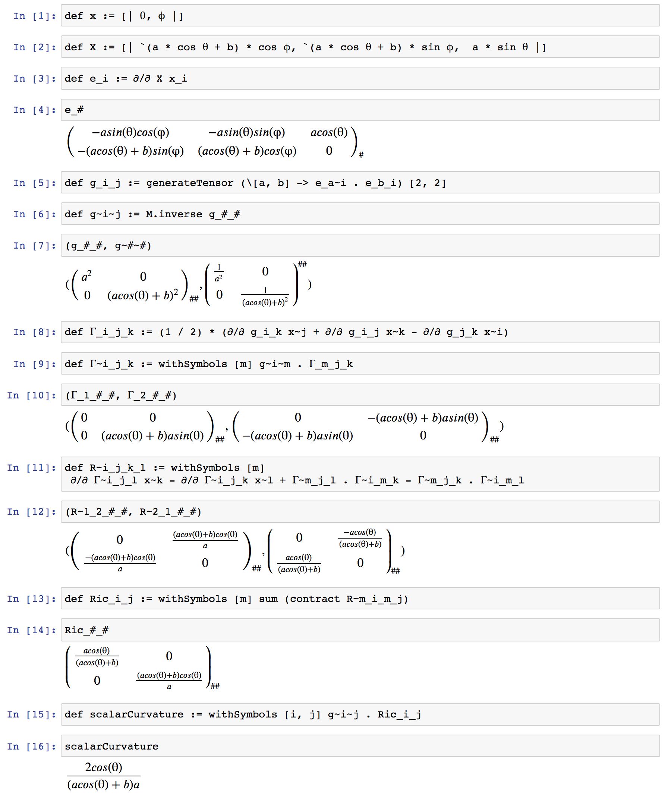
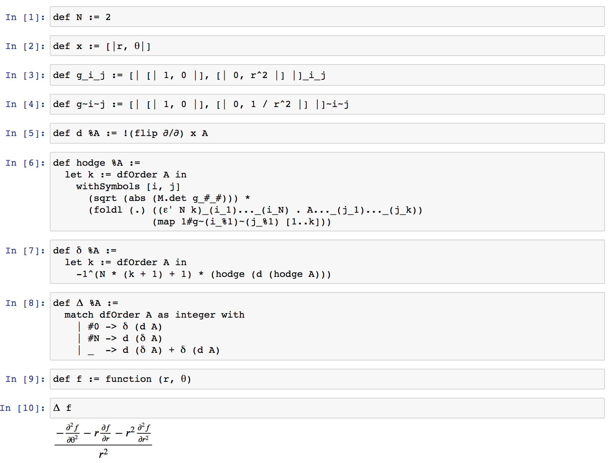

14Egisonで計算する微分幾何
本章は，数式処理システムとしてのEgisonの実践的な応用例として微分幾何への応用を紹介する． Egisonを使うと，さまざまな多様体の曲率が定義の数式に近いプログラムを記述するだけで計算できたり，外微分やホッジ作用素のような微分形式のための作用素もプログラムで簡潔に定義できる． 本章の解説は読者に微分幾何の知識を仮定している． 微分幾何に興味を持つ読者には，小林昭七による『曲線と曲面の微分幾何』（裳華房）がおすすめである．
14.1微分幾何とEgison
微分幾何は手計算がとくに大変な分野である． 例えば，曲率が自明ではないもっとも単純な多様体は球面\(S^2\)であるが，そのリーマン曲率テンソルを手計算すると，初めての場合，30分くらいかかる． 続けて，その次に単純な多様体であるトーラス\(T^2\)のリーマン曲率テンソルを計算すると，またしても30分以上はかかる． 実際の研究のためには，より高次元の複雑な多様体の曲率を計算することが多い． このような場合，計算に一ヶ月以上かかることもある． そのため，微分幾何は数式処理システムがもっとも応用しやすい分野でもある．
数式処理システムを使えば，\(S^2\)のリーマン曲率テンソルは，球面座標系，リーマン計量，クリストッフェル記号，リーマン曲率テンソルの定義をプログラムとして記述すれば，数秒で計算できる． \(T^2\)については，\(S^2\)のリーマン曲率テンソルを計算をするプログラムを書いた後であれば，座標系の設定以外の部分は使いまわせるため，数分の作業で計算できる． より高次元の複雑な多様体についても，計量の設定を変更するだけで，計算することができる．
Egisonは，9.5節で解説した微分演算子，第12章で解説したテンソルのための言語機能，第13章で解説した関数シンボルを組み合わせて，従来の数式処理システムよりも数学の記法に近い形で微分幾何の計算をプログラムとして記述できる． また，12.9節で触れたように，外微分やホッジ作用素のような微分形式のための作用素もプログラムで簡潔に定義するための仕組みも提供している． 本章では，これらの機能を実演し，微分幾何の研究・教育にEgisonが役に立つことを紹介する．
14.2リーマン曲率テンソルの計算
本節は，球面について，リーマン計量や，クリストッフェル記号，リーマン曲率テンソル，リッチ曲率，スカラー曲率といった様々な微分幾何的な量をEgisonを使って計算するプログラムを解説する． 図14.2は，Jupyter Notebook上で球面のリーマン曲率テンソルを計算するEgisonプログラムとその実行結果の出力である． さまざまな幾何学的不変量は，曲率から計算される． 本節で解説するプログラムの計量の部分だけを変えれば，あらゆる多様体の曲率を計算できる． そのため，本節のプログラムを理解すれば，実際の微分幾何の研究にもEgisonが使える． 本節は，このプログラムの各箇所について順番に説明していくことによって進める．

14.2.1球座標系 - [1]-[2]
球座標系は，\(r\)と\(θ\)，\(φ\)の3つのパラメーターからなる． \(r\)は原点からの距離をあらわす． \(θ\)は\(z\)軸との角度，緯度をあらわす． \(φ\)は\(xy\)平面における\(x\)軸からの回転量，経度をあらわす． 球座標系の\(r\)の値を固定すれば，球面の座標系を得ることができる． 球座標系とデカルト座標系は，\(x = r \cos \theta \sin \phi, y = r \cos \theta \cos \phi, z = r \sin \theta\)という関係式で結ばれている． 以上が，図14.2の[1]と[2]で表現されている内容である．
14.2.2接ベクトルとリーマン計量 - [3]-[7]
球面上の\(θ\)，\(φ\)によって定まる各点の上の接空間の基底となるベクトルをまず計算している． [3]でそのようなベクトルを計算し，[4]でそのベクトルを表示している． [4]の出力の\(1\)行目と\(2\)行目が基底となるベクトルの成分である．
リーマン計量は，各点における接ベクトルの大きさや向きの情報をもつ行列として表現できる． [5]でベクトルの内積を計算すことによって基底ベクトルの大きさが計算されている． [6]では，[5]で定義したリーマン計量の値を表示している． 球座標系においては，座標から自然に定まる基底の大きさが，各点で異なる． たとえば，経度（\(\phi\)）方向の基底ベクトルの大きさが，緯度（\(\theta\)）によって変わる． この情報は，g_i_jの\(2,2\)成分の\(r^2 \sin^2 \theta\)にあらわれている．
[7]では，逆行列を計算する関数M.inverseを使って，上添字がつくリーマン計量を求めている． リーマン計量には下添字がつく\(g_{ij}\)と上添字がつく\(g^{ij}\)の2種類がある．
14.2.3クリストッフェル記号とリーマン曲率テンソル - [8]-[12]
[8]と[9]は，第一種クリストッフェル記号と第二種クリストッフェル記号の数式による定義をプログラムとして記述したものである． 数式に非常に近いかたちでプログラムとして表現されている． 直感的には，クリストッフェル記号\(\Gamma^{i}_{\;jk}\)は，基底ベクトル\(e_j\)を\(e_k\)方向に動かしたときの\(e_i\)方向への変化の具合を表現する．
リーマン曲率テンソルも，[11]のように，その数式による定義をそのままプログラムとして記述できている． 直感的には，リーマン曲率テンソル\(R^{i}_{\;jkl}\)は，\(e_k\)と\(e_l\)によって作られる閉路に沿って\(e_j\)を動かしたときの\(e_i\)方向への変化の具合を表現する．
14.2.4リッチ曲率とスカラー曲率 - [13]-[16]
[13]-[14]でリッチ曲率を，[15]-[16]でスカラー曲率を計算している． それぞれ下記の数式に対応している．
14.2.5計量を変えてみる
本節で解説したプログラムの計量の部分を変えるだけで，いろいろな多様体のクリストッフェル記号やリーマン曲率テンソルを計算できる．
たとえば，トーラス\(T^2\)のリーマン曲率テンソルを計算するには，球座標系をトーラスの座標系に変更すればよい． トーラスの座標系はたとえば，図14.2.5の[1]-[2]のように設定できる． バッククォート(“`”)が，この式の中で使われている． 10.2節で解説したように，バッククォートのついた数式は，Egison処理系に一つのシンボルと同じように扱われる． ここでは，バッククォートを適切に挿入することより，計算プロセスや，最終的な計算結果が単純になっている．

また，計量を以下のように定義されるSchwarzschild計量に変えれば，原点を中心に一つだけ質量をもつ天体がある宇宙についての一般相対性理論の計算ができる． この計算結果は，「時空の曲がり=重力」ということをあらわしている．
declare symbol G, M, c, t, r, `$\theta$`, `$\phi$`
def g_i_j : Tensor MathValue :=
[| [| `(c^2 * r - 2 * G * M) / (c^2 * r), 0, 0, 0 |]
, [| 0, (-1) / (`(c^2 * r - 2 * G * M) / (c^2 * r)), 0, 0 |]
, [| 0, 0, -r^2, 0 |]
, [| 0, 0, 0, -r^2 * (sin `$\theta$`)^2 |]
|]このプログラムの全体は，Egisonのソースコードのsample/math/geometry/riemann-curvature-tensor-of-Schwarzschild-metric.egiにある．
14.3曲率形式の計算 - 微分形式を使った計算（1）
12.8節や，12.9節，12.14節で言及したように，Egisonのテンソル関連の機能は微分形式を使った計算を簡潔に表現できるように設計されている． 微分形式を使うと，テンソルに関する演算をより抽象的に記述できるようになる．
本節では，微分形式の計算の例として，曲率形式の計算を紹介する． 曲率形式は，リーマン曲率テンソルを一般化したもので，曲率形式の公式\(\Omega^{i}_{\;j} = d \omega^{i}_{\;j} + \omega^{i}_{\;k} \wedge \omega^{k}_{\;j}\)というリーマン曲率テンソルの公式よりも簡潔な形の式を使って計算できる． 上記の公式にあらわれる\(\omega\)は接続形式と呼ばれ，微分形式において第二種クリストッフェル記号に対応するものである．

14.3.1ウェッジ積・曲率形式
図14.3は\(S^2\)の曲率形式をEgisonで計算したプログラムである． [1]-[5]で球面座標系のパラメータと，リーマン計量，クリストッフェル記号を設定している． [6]で接続形式\(\omega\)を第二種クリストッフェル記号を使って定義している． [7]で外微分演算子を定義している． [8]-[9]でウェッジ積を定義している． ウェッジ積は中置演算子として定義されている． [10]-[12]で曲率形式を計算して出力している．
14.3.2オイラー形式とオイラー数
オイラー類は，積分したらオイラー数が得られる特性類として有名な特性類である． 以下のプログラムは，トーラス\(T^2\)のオイラー形式を計算している．
def eulerForm : Tensor MathValue :=
(1 / (4 * `$\pi$`)) * withSymbols [t1, t2]
(`$\Omega$`~1_2_t1_t2 - `$\Omega$`~2_1_t1_t2)
eulerForm
-- [| [| 0, (1 / 2) * ('cos `$\theta$`) * `$\pi$`^-1 |],
-- [| (-1 / 2) * ('cos `$\theta$`) * `$\pi$`^-1, 0 |] |]ここで\(\Omega\)は添字について反対称化した曲率形式である． このプログラムの全体は，Egisonのソースコードのsample/math/geometry/euler-form-of-T2.egiにある．
積分のための関数がEgisonには実装されていないため，手計算でこれを積分した結果を記す． 積分すると\(T^2\)のオイラー数である\(0\)が得られる．
14.4ホッジ・ラプラシアンの計算 - 微分形式を使った計算（2）
本節では，微分形式を使った計算をプログラムする例を紹介する．
図14.4は，極座標のラプラシアンをホッジ・ラプラシアンの公式\(\Delta = d \delta + \delta d\)を使って計算するEgisonプログラムとその実行結果である． 本節の前半は，このプログラムの解説をしながら進む．

14.4.1外微分・ホッジ作用素
図14.4の前半[1]-[4]は，極座標系のパラメーターと計量を設定している． その後，外微分・ホッジ作用素・外微分の随伴作用素という微分形式の基本的な演算子を[5]-[8]で定義している． [6]のホッジ作用素の定義には以下の公式を使っている． この定義のなかで使われているsubrefsは，第二引数のシンボルのリストを，第一引数のテンソルの下添字として順番に付加する組み込み関数である．
14.4.2ホッジ・ラプラシアン
微分形式を使うと，ラプラシアンは\(\Delta = d \delta + \delta d\)と座標系に依存しないように定義できる． この公式を使って表現されるラプラシアンはホッジ・ラプラシアンと呼ばれる． [8]においてこの公式がEgisonで表現されている． [8]の定義において，\(0\)形式と\(2\)形式の場合が特別扱いされている． これは，\(2\)次元座標系における\(2\)形式にたいして\(d\)が，\(0\)形式にたいして\(\delta\)が，厳密には未定義であるためである．
[9]で定義した関数シンボルに，[10]でホッジ・ラプラシアンを適用している． 14.2節で解説したリーマン曲率テンソルと同様，ホッジ・ラプラシアンについても計量を変えるだけで，いろいろな座標系のラプラシアンを計算できる．
14.5その他の微分形式についての演算子 - 内部積・リー微分
内部積やリー微分も，Egisonで簡潔に定義できることを紹介しておく． これらの演算子は，たとえば，流体力学の質量保存の法則やナビエ・ストークス方程式の微分形式による表現をするときに使う． 内部積は，ライブラリ（lib/math/geometry/differential-form.egi）で以下のように定義されている． DiffForm aは微分形式を表す組み込みの型である．
def `$\iota$` {Field a} (X: DiffForm a) (Y: DiffForm a) : DiffForm a :=
withSymbols [i] dfOrder Y * (X...~i . dfNormalize Y..._i)リー微分は以下のように定義できる（Nは多様体の次元である）．
def Lie {Field a} (X: DiffForm a) (Y: DiffForm a) : DiffForm a :=
match dfOrder Y as integer with
| #0 -> `$\iota$` X (d Y)
| #N -> d (`$\iota$` X Y)
| _ -> `$\iota$` X (d Y) + d (`$\iota$` X Y)